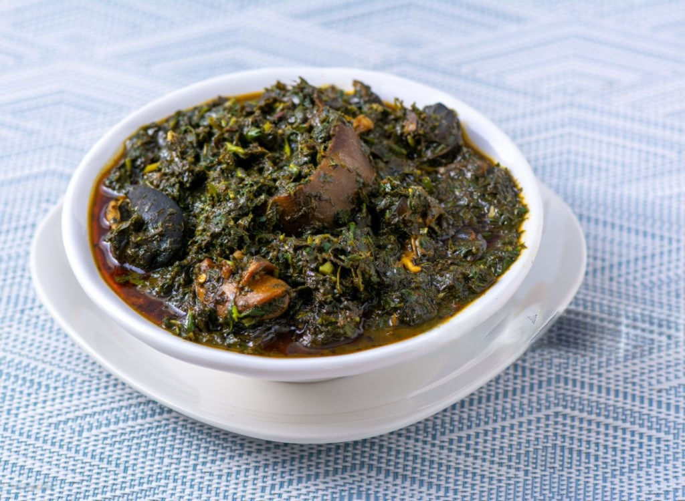

Let me walk you through a short history on the origin of Vegetable Soup.
Learn more about Afang SoupThis is what you finished product should look like

Wash and slice the water leaves and fluted pumpkin leaves with a kitchen knife, you want them thinly sliced as you can see below. What you find below is a bowl of fluted pumpkin leaves – vegetables. This is the equivalent of 12 cups. You should wash ugu (fluted pumpkin) properly before slicing them.
Wash the roasted fish, remove center bone and break to smaller bits as you can see below.
Season the goat meat with a teaspoon of salt, sliced onions and two seasoning cubes. Allow the meat to boil, add two cups of water and let the meat cook until it becomes tender and easy to chew.
Pound the scotch bonnet (peppers) and 1 cup of crayfish together. You could blend them if you like. Set aside on a small plate.Buying Fresh Seafood
To the boiling meat, add the washed, roasted fish. Allow them to cook until the water dries. Don’t allow it to burn. Most people don’t like too much water in their vegetable soup, to achieve that, use some tricks – like boiling the meat/fish till the water is almost dried.
When the meat cooked and the water is almost completely dried, add the palm oil, 400ml. You need lots of palm oil when you cook vegetable soup.
Now you add the vegetables, the water leaves should come first. It should fill the pot, it will go down in 3 minutes as you continue to stir.
Add the pounded crayfish and peppers.
Stir all together and taste for salt, add salt to your taste. You don’t want too much salt.
Add the ugu leaves (fluted pumpkin) at this point.
Stir in 2 tablespoons of ofor (used as a thickener). Turn properly so it doesn’t form crumbs.
Stir all together and allow the vegetable soup to simmer for three minutes.
That is how to make vegetable soup the Nigerian way. I serve all soups in Nigeria with swallow. There are 4 major types in Nigeria.